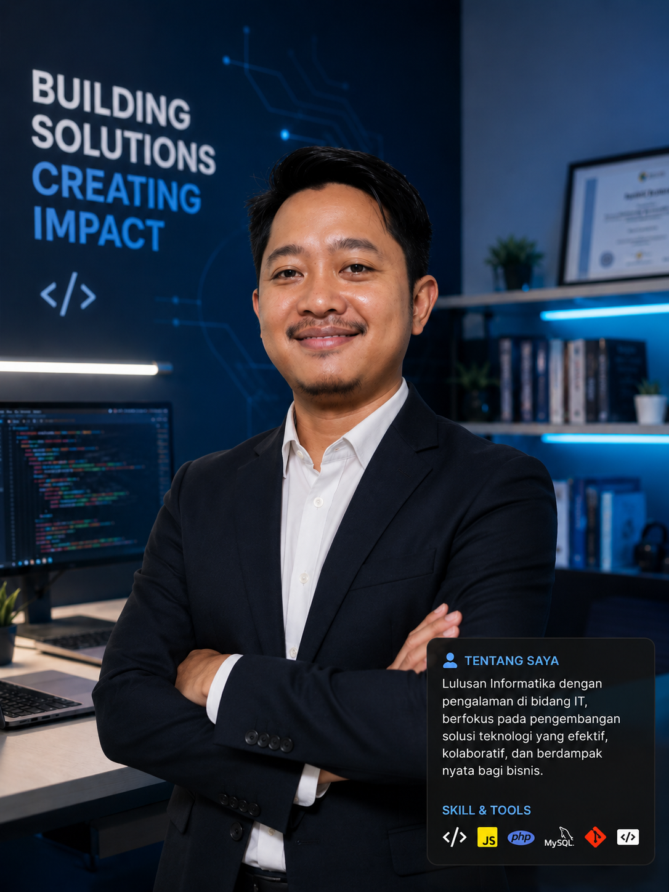

Backend Developer yang berdedikasi, pekerja keras, jujur, dan ulet dalam menjalankan setiap tugas.

Saya adalah seorang Backend Developer yang pekerja keras, jujur, dan ulet. Menjunjung tinggi etos kerja yang kuat, saya selalu berkomitmen memberikan hasil terbaik dalam setiap proyek. Dengan latar belakang pendidikan Teknik Informatika dan pengalaman di bidang pemrograman, saya fokus pada pengembangan sistem yang efisien, scalable, dan bermanfaat.
Pekerja Keras
Jujur & Amanah
Ulet & Konsisten
Programmer Backend Developer
Bertanggung jawab dalam pengembangan dan pemeliharaan sistem informasi berbasis web menggunakan Laravel. Mengimplementasikan fitur backend, database management, serta integrasi sistem.
Mengelola data keuangan dan administrasi sekolah menggunakan Microsoft Office dan sistem informasi.
Mengajar siswa tentang pemrograman, jaringan komputer, dan teknologi informasi.
Aplikasi manajemen perpustakaan lengkap (CRUD, peminjaman, pengembalian buku)
Sistem Monitoring dan Evaluasi (E-Monev) untuk internal Kemendagri Adwil
Aplikasi web untuk memantau dan meningkatkan kepatuhan diet pasien obesitas
Aplikasi e-commerce / toko online lengkap
Saya terbuka untuk freelance, kolaborasi proyek, atau kesempatan kerja baru.